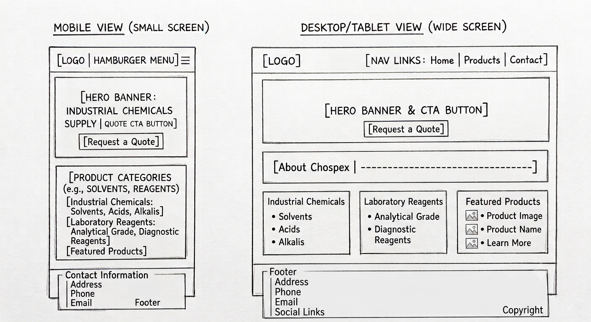

Dark Blue
Hex code: #12355B
This color will be used for the header, footer, primary headings, and navigation areas.
WDD 231 Individual Website Project
Planning document for an industrial and laboratory chemicals distribution website.
This name was selected because it clearly identifies the company and communicates that the business supplies industrial chemicals and laboratory products.
Optional domain name: chospexchemicals.com
The purpose of the Chospex website is to provide information about the company, its industrial chemicals, laboratory reagents, and the industries it serves.
The website will allow visitors to browse product categories, view featured products, learn more about Chospex, request quotations, and contact the company for product information and business inquiries.
The following questions represent information that members of the target audience may look for when visiting the website:
The website will use a professional color scheme that reflects trust, safety, cleanliness, and reliability.
Hex code: #12355B
This color will be used for the header, footer, primary headings, and navigation areas.
Hex code: #157A6E
This color will be used for buttons, links, borders, highlights, and other accent elements.
Hex code: #F4F6F8
This color will be used for the page background and selected content areas.
Hex code: #FFFFFF
This color will be used for content cards and text displayed on dark backgrounds.
Montserrat will be used for the main page title, section headings, product headings, navigation text, and buttons.
Industrial and Laboratory Chemicals
Open Sans will be used for paragraphs, product descriptions, lists, contact information, and other general page content.
Chospex provides industrial chemicals and laboratory reagents for different business and scientific needs.
The wireframe below shows the planned structure of the Chospex home page on mobile and wider desktop or tablet screens.
